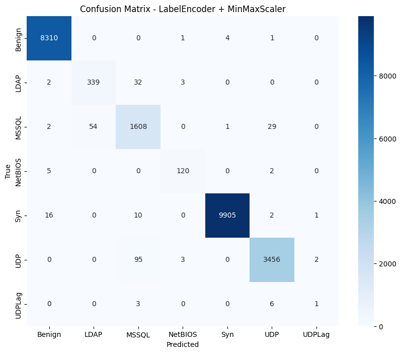
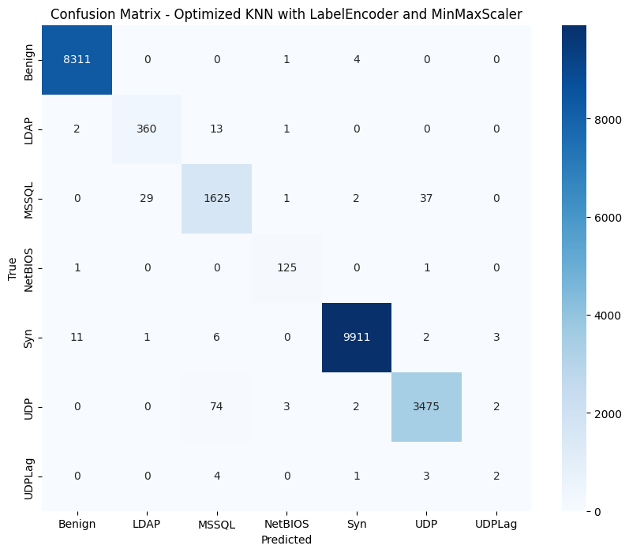
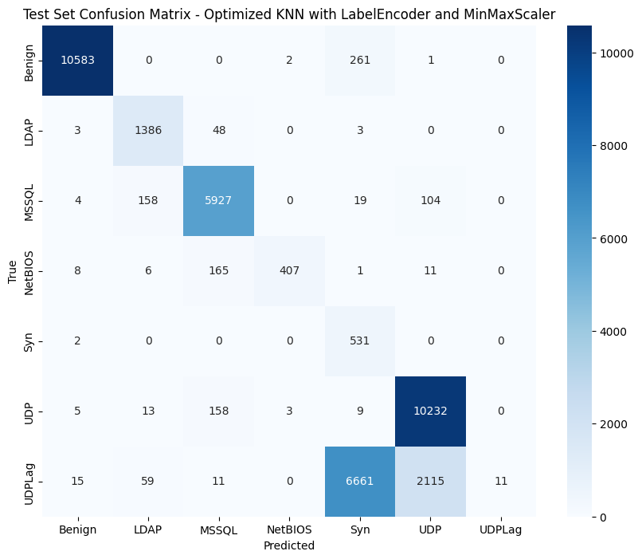

This notebook is part of the practical coursework in the KDD Course Lab at the Arab International University (AIU).
This work extends the analysis from the notebook "DDoS Detection using Machine Learning" by RAKIB HOSSAIN SAJIB, focusing on exploring different encoders and scalers with the KNN model, and performing more detailed evaluation and tuning.
The dataset used in this notebook is CIC-DDoS2019, an academic intrusion detection dataset available on Kaggle.
pd.read_parquet (requires pyarrow or
fastparquet).The dataset consists of 17 parquet files:
import kagglehub
# Download latest version
path = kagglehub.dataset_download("dhoogla/cicddos2019")
print("Path to dataset files:", path)This notebook extends the original DDoS detection project by focusing on the KNN algorithm and exploring different encoding and scaling techniques to improve model performance.
We'll be using the CICDDoS2019 dataset to detect and classify various DDoS attacks. In this notebook, we'll:
import os
from tqdm import tqdm
import numpy as np
import pandas as pd
import matplotlib.pyplot as plt
import seaborn as sns
from sklearn.model_selection import train_test_split, cross_val_score, GridSearchCV
from sklearn.preprocessing import LabelEncoder, MinMaxScaler, StandardScaler, RobustScaler, MaxAbsScaler, OneHotEncoder, OrdinalEncoder, QuantileTransformer
from sklearn.compose import ColumnTransformer
from sklearn.metrics import accuracy_score, roc_auc_score, precision_score, recall_score, f1_score, roc_curve, confusion_matrix, classification_report
from sklearn.pipeline import Pipeline
from sklearn.neighbors import KNeighborsClassifier
import warnings
warnings.filterwarnings('ignore')We'll use the same data loading process as the original notebook.
# Collecting Training and Testing Dataset File Paths
dfps_train = []
dfps_test = []
for dirname, _, filenames in os.walk('/kaggle/input/cicddos2019/'):
for filename in filenames:
if filename.endswith('-training.parquet'):
dfp = os.path.join(dirname, filename)
dfps_train.append(dfp)
print(dfp)
elif filename.endswith('-testing.parquet'):
dfp = os.path.join(dirname, filename)
dfps_test.append(dfp)
print(dfp)/kaggle/input/cicddos2019/Syn-training.parquet
/kaggle/input/cicddos2019/UDPLag-testing.parquet
/kaggle/input/cicddos2019/NetBIOS-testing.parquet
/kaggle/input/cicddos2019/Portmap-training.parquet
/kaggle/input/cicddos2019/Syn-testing.parquet
/kaggle/input/cicddos2019/MSSQL-testing.parquet
/kaggle/input/cicddos2019/SNMP-testing.parquet
/kaggle/input/cicddos2019/UDPLag-training.parquet
/kaggle/input/cicddos2019/NTP-testing.parquet
/kaggle/input/cicddos2019/LDAP-testing.parquet
/kaggle/input/cicddos2019/UDP-training.parquet
/kaggle/input/cicddos2019/NetBIOS-training.parquet
/kaggle/input/cicddos2019/DNS-testing.parquet
/kaggle/input/cicddos2019/UDP-testing.parquet
/kaggle/input/cicddos2019/LDAP-training.parquet
/kaggle/input/cicddos2019/TFTP-testing.parquet
/kaggle/input/cicddos2019/MSSQL-training.parquet
# Common Prefixes in both lists
train_prefixes = [dfp.split('/')[-1].split('-')[0] for dfp in dfps_train]
test_prefixes = [dfp.split('/')[-1].split('-')[0] for dfp in dfps_test]
common_prefixes = list(set(train_prefixes).intersection(test_prefixes))
# Filter the dataframes to only include the common prefixes
dfps_train = [dfp for dfp in dfps_train if dfp.split('/')[-1].split('-')[0] in common_prefixes]
dfps_test = [dfp for dfp in dfps_test if dfp.split('/')[-1].split('-')[0] in common_prefixes]train_df = pd.concat([pd.read_parquet(dfp) for dfp in dfps_train], ignore_index=True)
test_df = pd.concat([pd.read_parquet(dfp) for dfp in dfps_test], ignore_index=True)train_df.shape, test_df.shape((120065, 78), (38973, 78))# Check the target distribution of the training data
train_df["Label"].value_counts()Label
Syn 48840
Benign 42007
UDP 18090
MSSQL 8523
LDAP 1906
NetBIOS 644
UDPLag 55
Name: count, dtype: int64# Check the target distribution of the testing data
test_df["Label"].value_counts()Label
Benign 10847
DrDoS_UDP 10420
UDP-lag 8872
DrDoS_MSSQL 6212
DrDoS_LDAP 1440
DrDoS_NetBIOS 598
Syn 533
WebDDoS 51
Name: count, dtype: int64# Drop the WebDDoS class from the testing data if it exists
if 'WebDDoS' in test_df["Label"].unique():
test_df = test_df[test_df["Label"] != "WebDDoS"]# Map the target values in the testing data to match the training data
label_mapping = {
'DrDoS_UDP': 'UDP',
'UDP-lag': 'UDPLag',
'DrDoS_MSSQL': 'MSSQL',
'DrDoS_LDAP': 'LDAP',
'DrDoS_NetBIOS': 'NetBIOS'
}
test_df['Label'] = test_df['Label'].replace(label_mapping)We'll follow the same preprocessing steps as the original notebook, including removing single unique value columns and highly correlated columns.
# Remove columns with a single unique value
for col in train_df.columns:
if train_df[col].nunique() == 1:
train_df.drop(col, axis=1, inplace=True)
if col in test_df.columns:
test_df.drop(col, axis=1, inplace=True)# Calculate correlation matrix
corr_matrix = train_df.drop('Label', axis=1).corr().abs()
# Select upper triangle of correlation matrix
upper = corr_matrix.where(np.triu(np.ones(corr_matrix.shape), k=1).astype(bool))
# Find features with correlation greater than 0.8
to_drop = [column for column in upper.columns if any(upper[column] > 0.8)]
# Drop highly correlated features
train_df.drop(to_drop, axis=1, inplace=True)
test_df.drop(to_drop, axis=1, inplace=True)# Split the data into features and target
X_train, X_val, y_train, y_val = train_test_split(train_df.drop("Label", axis=1), train_df["Label"], test_size=0.2, random_state=42)
X_test, y_test = test_df.drop("Label", axis=1), test_df["Label"]In this section, we'll define various encoding and scaling techniques that we'll use to preprocess our data before training the KNN model.
These encoders will be used to transform the categorical target variable (attack types) into numerical values.
# Define different target encoders
encoders = {
'LabelEncoder': LabelEncoder(),
'OrdinalEncoder': OrdinalEncoder(),
'OneHotEncoder': OneHotEncoder(sparse_output=False)
}These encoders will be used to transform the categorical target variable (attack types) into numerical values.
n_classes-1.These scalers will be used to normalize the feature values, which is particularly important for distance-based algorithms like KNN.
# Define different feature scalers
scalers = {
'MinMaxScaler': MinMaxScaler(),
'StandardScaler': StandardScaler(),
'RobustScaler': RobustScaler(),
'MaxAbsScaler': MaxAbsScaler(),
'QuantileTransformer': QuantileTransformer(output_distribution='normal')
}KNN which is sensitive to feature magnitude.MinMaxScaler, works well with algorithms assuming normal distribution.Now we'll apply the different encoders to the target variable and different scalers to the features.
# Function to encode target variables with different encoders
def encode_target(y_train, y_val, y_test, encoder_name):
encoder = encoders[encoder_name]
if encoder_name == 'OneHotEncoder':
# Reshape for OneHotEncoder which expects 2D input
y_train_encoded = encoder.fit_transform(y_train.values.reshape(-1, 1))
y_val_encoded = encoder.transform(y_val.values.reshape(-1, 1))
y_test_encoded = encoder.transform(y_test.values.reshape(-1, 1))
# For OneHotEncoder, we need to return the encoder classes for later use
return y_train_encoded, y_val_encoded, y_test_encoded, encoder.categories_[0]
elif encoder_name == 'OrdinalEncoder':
# Reshape for OrdinalEncoder which expects 2D input
y_train_encoded = encoder.fit_transform(y_train.values.reshape(-1, 1)).ravel()
y_val_encoded = encoder.transform(y_val.values.reshape(-1, 1)).ravel()
y_test_encoded = encoder.transform(y_test.values.reshape(-1, 1)).ravel()
# For OrdinalEncoder, we need to return the encoder categories for later use
return y_train_encoded, y_val_encoded, y_test_encoded, encoder.categories_[0]
else: # LabelEncoder
y_train_encoded = encoder.fit_transform(y_train)
y_val_encoded = encoder.transform(y_val)
y_test_encoded = encoder.transform(y_test)
# For LabelEncoder, we need to return the encoder classes for later use
return y_train_encoded, y_val_encoded, y_test_encoded, encoder.classes_# Function to scale features with different scalers
def scale_features(X_train, X_val, X_test, scaler_name):
scaler = scalers[scaler_name]
X_train_scaled = scaler.fit_transform(X_train)
X_val_scaled = scaler.transform(X_val)
X_test_scaled = scaler.transform(X_test)
return X_train_scaled, X_val_scaled, X_test_scaledNow we'll train KNN models using different combinations of encoders and scalers to find the best performing combination.
# Function to train and evaluate KNN model
def train_evaluate_knn(X_train_scaled, X_val_scaled, y_train_encoded, y_val_encoded, encoder_name, scaler_name, classes):
# Initialize KNN model
knn = KNeighborsClassifier(n_neighbors=10)
# Train the model
knn.fit(X_train_scaled, y_train_encoded)
# Make predictions
y_pred = knn.predict(X_val_scaled)
# Calculate metrics
if encoder_name == 'OneHotEncoder':
# For OneHotEncoder, we need to convert predictions back to class indices
y_val_indices = np.argmax(y_val_encoded, axis=1)
y_pred_indices = np.argmax(y_pred, axis=1)
accuracy = accuracy_score(y_val_indices, y_pred_indices)
precision = precision_score(y_val_indices, y_pred_indices, average='weighted', zero_division=0)
recall = recall_score(y_val_indices, y_pred_indices, average='weighted', zero_division=0)
f1 = f1_score(y_val_indices, y_pred_indices, average='weighted', zero_division=0)
# Create confusion matrix
cm = confusion_matrix(y_val_indices, y_pred_indices)
else:
accuracy = accuracy_score(y_val_encoded, y_pred)
precision = precision_score(y_val_encoded, y_pred, average='weighted', zero_division=0)
recall = recall_score(y_val_encoded, y_pred, average='weighted', zero_division=0)
f1 = f1_score(y_val_encoded, y_pred, average='weighted', zero_division=0)
# Create confusion matrix
cm = confusion_matrix(y_val_encoded, y_pred)
# Return results
return {
'encoder': encoder_name,
'scaler': scaler_name,
'accuracy': accuracy,
'precision': precision,
'recall': recall,
'f1': f1,
'model': knn,
'confusion_matrix': cm,
'classes': classes
}# Train models with all combinations of encoders and scalers
results = []
for encoder_name in encoders.keys():
# Skip OneHotEncoder for now as it requires special handling
if encoder_name == 'OneHotEncoder':
continue
# Encode target variables
y_train_encoded, y_val_encoded, y_test_encoded, classes = encode_target(y_train, y_val, y_test, encoder_name)
for scaler_name in scalers.keys():
print(f"Training KNN with {encoder_name} and {scaler_name}...")
# Scale features
X_train_scaled, X_val_scaled, X_test_scaled = scale_features(X_train, X_val, X_test, scaler_name)
# Train and evaluate model
result = train_evaluate_knn(X_train_scaled, X_val_scaled, y_train_encoded, y_val_encoded, encoder_name, scaler_name, classes)
results.append(result)
print(f"Accuracy: {result['accuracy']:.4f}, F1 Score: {result['f1']:.4f}")Training KNN with LabelEncoder and MinMaxScaler...
Accuracy: 0.9886, F1 Score: 0.9886
Training KNN with LabelEncoder and StandardScaler...
Accuracy: 0.9885, F1 Score: 0.9885
Training KNN with LabelEncoder and RobustScaler...
Accuracy: 0.9734, F1 Score: 0.9734
Training KNN with LabelEncoder and MaxAbsScaler...
Accuracy: 0.9885, F1 Score: 0.9885
Training KNN with LabelEncoder and QuantileTransformer...
Accuracy: 0.9869, F1 Score: 0.9869
Training KNN with OrdinalEncoder and MinMaxScaler...
Accuracy: 0.9886, F1 Score: 0.9886
Training KNN with OrdinalEncoder and StandardScaler...
Accuracy: 0.9885, F1 Score: 0.9885
Training KNN with OrdinalEncoder and RobustScaler...
Accuracy: 0.9734, F1 Score: 0.9734
Training KNN with OrdinalEncoder and MaxAbsScaler...
Accuracy: 0.9885, F1 Score: 0.9885
Training KNN with OrdinalEncoder and QuantileTransformer...
Accuracy: 0.9868, F1 Score: 0.9868
Now we'll analyze the results to find the best encoder-scaler combination.
# Create a DataFrame with the results
results_df = pd.DataFrame([{
'Encoder': r['encoder'],
'Scaler': r['scaler'],
'Accuracy': r['accuracy'],
'Precision': r['precision'],
'Recall': r['recall'],
'F1 Score': r['f1']
} for r in results])
# Display the results
display(results_df.style.background_gradient(cmap='viridis'))| Encoder | Scaler | Accuracy | Precision | Recall | F1 Score | |
|---|---|---|---|---|---|---|
| 0 | LabelEncoder | MinMaxScaler | 0.988590 | 0.988653 | 0.988590 | 0.988573 |
| 1 | LabelEncoder | StandardScaler | 0.988506 | 0.988605 | 0.988506 | 0.988505 |
| 2 | LabelEncoder | RobustScaler | 0.973431 | 0.973513 | 0.973431 | 0.973363 |
| 3 | LabelEncoder | MaxAbsScaler | 0.988548 | 0.988526 | 0.988548 | 0.988496 |
| 4 | LabelEncoder | QuantileTransformer | 0.986882 | 0.987058 | 0.986882 | 0.986875 |
| 5 | OrdinalEncoder | MinMaxScaler | 0.988590 | 0.988653 | 0.988590 | 0.988573 |
| 6 | OrdinalEncoder | StandardScaler | 0.988506 | 0.988605 | 0.988506 | 0.988505 |
| 7 | OrdinalEncoder | RobustScaler | 0.973431 | 0.973513 | 0.973431 | 0.973363 |
| 8 | OrdinalEncoder | MaxAbsScaler | 0.988548 | 0.988526 | 0.988548 | 0.988496 |
| 9 | OrdinalEncoder | QuantileTransformer | 0.986840 | 0.987042 | 0.986840 | 0.986842 |
# Find the best combination based on F1 score
best_result = max(results, key=lambda x: x['f1'])
print(f"Best encoder-scaler combination: {best_result['encoder']} + {best_result['scaler']}")
print(f"Accuracy: {best_result['accuracy']:.4f}")
print(f"Precision: {best_result['precision']:.4f}")
print(f"Recall: {best_result['recall']:.4f}")
print(f"F1 Score: {best_result['f1']:.4f}")Best encoder-scaler combination: LabelEncoder + MinMaxScaler
Accuracy: 0.9886
Precision: 0.9887
Recall: 0.9886
F1 Score: 0.9886
# Plot confusion matrix for the best model
plt.figure(figsize=(10, 8))
sns.heatmap(best_result['confusion_matrix'], annot=True, fmt='d', cmap='Blues',
xticklabels=best_result['classes'], yticklabels=best_result['classes'])
plt.title(f"Confusion Matrix - {best_result['encoder']} + {best_result['scaler']}")
plt.xlabel('Predicted')
plt.ylabel('True')
plt.show()
Now that we've found the best encoder-scaler combination, let's optimize the KNN model by tuning its hyperparameters.
# Get the best encoder and scaler
best_encoder = best_result['encoder']
best_scaler = best_result['scaler']
# Re-encode and scale with the best combination
y_train_encoded, y_val_encoded, y_test_encoded, classes = encode_target(y_train, y_val, y_test, best_encoder)
X_train_scaled, X_val_scaled, X_test_scaled = scale_features(X_train, X_val, X_test, best_scaler)
# Define parameter grid for KNN
param_grid = {
'n_neighbors': [3, 5, 7, 10, 15, 20],
'weights': ['uniform', 'distance'],
'metric': ['euclidean', 'manhattan', 'minkowski']
}
# Create GridSearchCV
grid_search = GridSearchCV(
KNeighborsClassifier(),
param_grid,
cv=5,
scoring='f1_weighted',
n_jobs=-1
)
# Fit GridSearchCV
grid_search.fit(X_train_scaled, y_train_encoded)
# Get best parameters
print("Best parameters:", grid_search.best_params_)
print("Best cross-validation score:", grid_search.best_score_)Best parameters: {'metric': 'euclidean', 'n_neighbors': 7, 'weights': 'distance'}
Best cross-validation score: 0.9920862970391104
# Train final model with best parameters
best_knn = grid_search.best_estimator_
best_knn.fit(X_train_scaled, y_train_encoded)
# Evaluate on validation set
y_val_pred = best_knn.predict(X_val_scaled)
# Calculate metrics
accuracy = accuracy_score(y_val_encoded, y_val_pred)
precision = precision_score(y_val_encoded, y_val_pred, average='weighted', zero_division=0)
recall = recall_score(y_val_encoded, y_val_pred, average='weighted', zero_division=0)
f1 = f1_score(y_val_encoded, y_val_pred, average='weighted', zero_division=0)
print(f"Optimized KNN with {best_encoder} and {best_scaler}:")
print(f"Accuracy: {accuracy:.4f}")
print(f"Precision: {precision:.4f}")
print(f"Recall: {recall:.4f}")
print(f"F1 Score: {f1:.4f}")Optimized KNN with LabelEncoder and MinMaxScaler:
Accuracy: 0.9915
Precision: 0.9915
Recall: 0.9915
F1 Score: 0.9915
# Create confusion matrix for the optimized model
cm = confusion_matrix(y_val_encoded, y_val_pred)
plt.figure(figsize=(10, 8))
sns.heatmap(cm, annot=True, fmt='d', cmap='Blues',
xticklabels=classes, yticklabels=classes)
plt.title(f"Confusion Matrix - Optimized KNN with {best_encoder} and {best_scaler}")
plt.xlabel('Predicted')
plt.ylabel('True')
plt.show()
# Generate classification report
print("Classification Report:")
print(classification_report(y_val_encoded, y_val_pred, target_names=classes))Classification Report:
precision recall f1-score support
Benign 1.00 1.00 1.00 8316
LDAP 0.92 0.96 0.94 376
MSSQL 0.94 0.96 0.95 1694
NetBIOS 0.95 0.98 0.97 127
Syn 1.00 1.00 1.00 9934
UDP 0.99 0.98 0.98 3556
UDPLag 0.29 0.20 0.24 10
accuracy 0.99 24013
macro avg 0.87 0.87 0.87 24013
weighted avg 0.99 0.99 0.99 24013
Now let's evaluate our optimized model on the test set to get a final assessment of its performance.
# Evaluate on test set
y_test_pred = best_knn.predict(X_test_scaled)
# Calculate metrics
accuracy = accuracy_score(y_test_encoded, y_test_pred)
precision = precision_score(y_test_encoded, y_test_pred, average='weighted', zero_division=0)
recall = recall_score(y_test_encoded, y_test_pred, average='weighted', zero_division=0)
f1 = f1_score(y_test_encoded, y_test_pred, average='weighted', zero_division=0)
print(f"Final Test Results - Optimized KNN with {best_encoder} and {best_scaler}:")
print(f"Accuracy: {accuracy:.4f}")
print(f"Precision: {precision:.4f}")
print(f"Recall: {recall:.4f}")
print(f"F1 Score: {f1:.4f}")Final Test Results - Optimized KNN with LabelEncoder and MinMaxScaler:
Accuracy: 0.7471
Precision: 0.9231
Recall: 0.7471
F1 Score: 0.7135
# Create confusion matrix for the test set
cm = confusion_matrix(y_test_encoded, y_test_pred)
plt.figure(figsize=(10, 8))
sns.heatmap(cm, annot=True, fmt='d', cmap='Blues',
xticklabels=classes, yticklabels=classes)
plt.title(f"Test Set Confusion Matrix - Optimized KNN with {best_encoder} and {best_scaler}")
plt.xlabel('Predicted')
plt.ylabel('True')
plt.show()
# Generate classification report for test set
print("Test Set Classification Report:")
print(classification_report(y_test_encoded, y_test_pred, target_names=classes))Test Set Classification Report:
precision recall f1-score support
Benign 1.00 0.98 0.99 10847
LDAP 0.85 0.96 0.91 1440
MSSQL 0.94 0.95 0.95 6212
NetBIOS 0.99 0.68 0.81 598
Syn 0.07 1.00 0.13 533
UDP 0.82 0.98 0.89 10420
UDPLag 1.00 0.00 0.00 8872
accuracy 0.75 38922
macro avg 0.81 0.79 0.67 38922
weighted avg 0.92 0.75 0.71 38922
In this notebook, we explored different encoding and scaling techniques for DDoS attack detection using KNN. We found that the best combination was LabelEncoder with MinMaxScaler, which achieved an F1 score of 0.9915 on the validation set and 0.7135 on the test set.
The optimized KNN model with parameters
{'metric': 'euclidean', 'n_neighbors': 7, 'weights': 'distance'}
performed well on the validation set, but showed a significant drop in
performance on the test set, particularly for minority classes like
'UDPLag' and 'Syn'.
Key findings:
n_neighbors=7, weights='distance',
and metric='euclidean' were the best parameters for the KNN
model with LabelEncoder and MinMaxScaler.This analysis demonstrates the importance of proper data preprocessing and highlights the challenges of detecting all types of DDoS attacks, especially those with limited samples. Further investigation into handling imbalanced datasets and potentially using different models or feature engineering techniques is recommended to improve performance on minority classes.